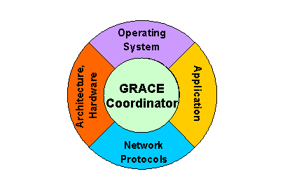

|
The Illinois GRACE Project Global Resource Allocation Through CoopEration |
|
|
Under construction
|

Departments of Computer
Science and Electrical and Computer Engineering
Challenges: Demanding, dynamic,
multidimensional resource needs and constraints. Approach: Design all system layers with an ability to adapt in response to system or application changes. To reap the full benefits of these adaptations, however, all system layers must cooperate to reach a system-wide globally optimal configuration. GRACE goal: An integrated cross-layer adaptive system where hardware and all software layers cooperatively adapt to maximize user satisfaction while meeting current resource constraints (e.g., energy, CPU time, and network bandwidth). |
|
This page was last modified by Sarita Adve on Tuesday, 27 August 2002 10:46:13 AM |
|